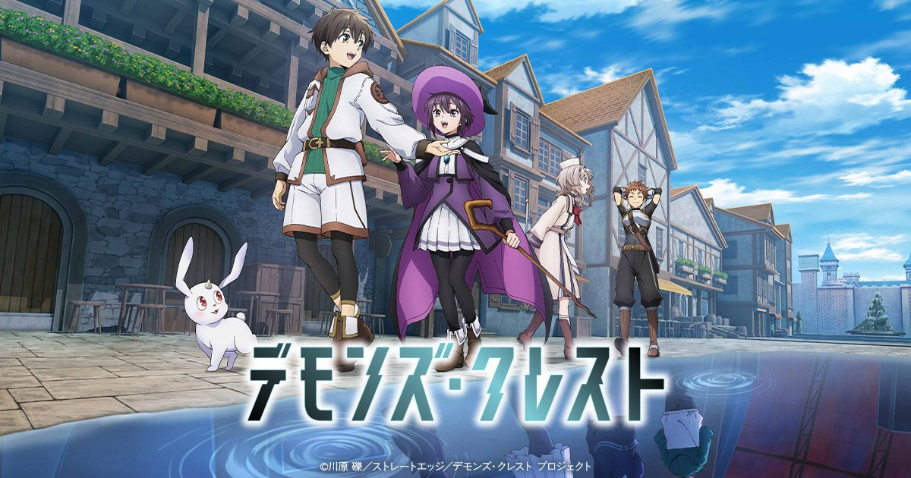

2026-11-01 · 开播深读
11 月 1 日，东京台场 United Cinemas Aqua City Odaiba 办了一场先行上映会，放的是第 1、2 话，票价 3500 日元，白石晴香、稲垣好、内田真礼到场。 五天后，也就是 11 月 6 日，这部动画将在 Prime Video 全球独占上线，前两集同一天放出，日本没有任何电视放送档期。 它是川原砾（《刀剑神域》《加速世界》）自 2022 年 11 月起在电击文库连载的《恶魔纹章》（デモンズ・クレスト），官方英文名写作 Devils' Crest，Production I.G 制作，华纳兄弟日本发行。 但这部作品最值得说的地方不是「川原砾又写了一个死亡游戏」，而是他这次把舞台从 VR 换成了 MR——而这一步换掉的东西，比大多数人以为的要多得多。

川原砾自己给这条线排过序：VR（虚拟现实）是《刀剑神域》，AR（扩张现实）是剧场版《序列之争》， 接下来他要写的是 MR（复合现实），也就是《恶魔纹章》。 官方设定写得很清楚：世界首款全感觉沉浸型 VRMMO-RPG《Actual Magic（AM）》在一次测试运行中，与「现实」发生了融合， 主角芦原佑马醒来时已经身处一个游戏规则和物理世界粘在一起的地方。
这一步的差别常被当成技术名词升级，其实它是类型地基的更换。 SAO 的结构是「人进去了」——现实还在外面好好地放着，你躺在游戏舱里，通关就能回家，死亡意味着游戏里的 HP 归零。 这套结构之所以成立，是因为它保留了「外面」这个坐标：所有的恐惧都建立在「我想回到那儿」之上，所有的勇气也都来自「我还能回去」。 MR 把「外面」整个拆掉了。 不是你进到游戏里，是现实本身被改写了。于是「登出」这个动作在这里没有宾语——你退出到哪儿？ 死亡游戏的经典契约原本是「活着出去」，到这里被迫改写成「活着把现实修回来」。 这不是同一个故事换了皮，是契约换了内容。
原作者从 2016 年 11 月就开始构思这个项目，2018 到 2019 年间成型。 他给自己定的目标非常具体：用小学生做群像剧的 VR 死亡游戏。 动画里芦原佑马与双胞胎妹妹佐羽是雪花小学六年级一班的学生，同班的近藤健二、佐野美凪、菅生辉、御园亚莉亚、木佐贯海、亘间澄美全部卷进来。
把主角从高中生降到小学六年级，抽掉的并不是「岁数」，而是少年主角那一整套被默认的资本。 桐人十五岁能被写成强者，是因为高中生已经有身体、有判断力、有「我可以自己选择留下」的能动性，甚至有可以恋爱的社会身份； 这些让 SAO 的残酷始终停在一个可被消费的距离上。 六年级没有这些。他们跑不快、打不过、没法对自己的处境做出有法律意义的决定，连「我要保护她」这句话都还没有分量。 川原这次是把观众和角色之间那层缓冲垫拿掉了。
代价也很清楚：他把残酷推到了观众的承受边界上，同时把「少年成长变强」这条最稳的爽线给删了。 风险在于，观众的第一反应有可能不是「好残酷」，而是「这太残忍了」——这两个词之间只有一线，而这条线每年都在移动。 声优白石晴香在采访里提到这是她第一次配少年男主，还说佑马「在严肃的战斗场面很可靠，但也有少根筋的可爱一面」； 这句话本身就在透露团队的处理方式：用「可爱」去对冲「残忍」，把天平往回拨一点。
故事的开局是这样的：佑马和同学们本来只是在参加《Actual Magic》的测试， 打完地下城 Boss 之后他失去意识，醒来发现世界变了。 然后他遇到了同班的亘间澄美——「以前是班上最可爱的女生之一，如今变成了可怕的怪物」。 妹妹佐羽则被什么东西附了身。
这是《恶魔纹章》真正的新东西。 SAO 里你要杀的东西是系统、是 NPC、是另一个玩家；它们没有你的生活记忆。 而这里你要面对的敌人，昨天还跟你一起放学。 死亡游戏这个类型三十年来一直在做同一件事——把敌人抽象化，好让你下手时不犹豫； 《恶魔纹章》反着来：它把敌人具体化，让你在动手之前先认出对方是谁。
这也解释了为什么要坚持「群像剧」。 在原作里每个同学都有一条完整的线，动画版据稲垣好透露还会有原作没有的展开。 群像不是为了让海报好看，是因为「记得这个人是谁」本身就是这个设定的伤害机制——你认不出来，就不疼。 一旦某个角色的篇幅被压缩成一个镜头，那一格的设计就白做了。 这条对动画改编的压力非常大：24 分钟里要同时推进危机和给足每个人的脸，是这部作品最难的那道题。
一个几乎没人提的细节： 《恶魔纹章》是先以条漫形式连载（HykeComic），电击文库的文库本才随后跟上。 这不是巧合。按已公开的说法，川原的编辑当时正准备启动条漫业务，于是主动提议把这部作品做成条漫，并同步推出文库本； 原作第一、二卷完成后因为作者的排期太满还一度搁置，条漫反而先跑在了前面。
顺序反了一次，影响是长期的。 这意味着这个故事的画面是先于文字被定稿的——读者第一次接触《恶魔纹章》时看到的是画，不是字。 对动画改编来说这是好事：分镜和构图有现成的参考，角色形象也不需要二次翻译。 但它同时也带来一个隐性问题：条漫的节奏是按周更的滑动条设计的，而文库本和动画需要的是章节结构。 如果这个 IP 的故事骨架是按条漫长的，那动画在把它压成一集 24 分钟的时候，要解决的就不仅是删减，而是重新分节。
日文原作叫「デモンズ・クレスト」，按读音直译就是 Demons' Crest。 但动画的官方英文名是 Devils' Crest——恶魔（Demon）被换成了魔鬼（Devil）。 官方没有解释过这个改动，中文圈至今也没形成统一译名（目前多见《恶魔纹章》）。
一个很可能的理由是撞名：卡普空 1994 年在 SFC 上出过一款叫《Demon's Crest》的动作游戏（大魔界村系列的火之精灵外传）， 而 FromSoftware 那边还有一个句式几乎一样的《Demon's Souls》。 一个要在全球流媒体上被搜索、被上架、被做 SEO 的新 IP，不可能接受这种级别的撞车。 改一个字母，换掉的是三十年的搜索历史。 这件事小到没人会写进通稿，但它恰好说明了一部日本轻小说出海时要过的第一关不是翻译，是商标检索。
角色设计与原作插画都是堀口悠纪子（《轻音少女》《玉子市场》）， 动画制作是 Production I.G（《攻壳机动队》《心理测量者》）， 总监督 Shinji Ushiro（《不要欺负我，长瀞同学》）、监督 Kenichiro Komaya、系列构成 Eiji Umehara（《Vivy》《异世界自杀小队》）、 音乐林ゆうき与近谷直之。
这份名单里最值得看的是堀口悠纪子。 她最被记住的作品是日常系，是圆脸、是柔软的线条、是放学后的光线。 让这样的人去画一群六年级生在死亡游戏里挣扎，是一次明确的反向搭配—— 越可爱，越疼；越像放学路上，越不像能活着回家。 而 Production I.G 的冷色调硬派质感正好压住另一端，不让整体滑进萌系。 这两股力能不能咬住，决定了这部动画是「让人难受得看下去」还是「让人尴尬得看不下去」。
主题曲也押在同一个方向：OP 是 Ado 的《シンカ》（Shinka），由 Vocaloid 制作人 yurryCanon 作词作曲；ED 是 Soala 的《ReaL》。 Ado 上一次和动画绑得这么深是《ONE PIECE FILM RED》里的乌塔。 「进化」这个词被放在一群被迫长大的六年级生头上，是标题级的双关：他们要进化，才能不死；而进化本身就意味着他们再也回不去原来那个自己。
还有一件事需要单独拎出来：这部动画没有日本电视放送档期，直接由 Prime Video 全球独占，首日放两集。 这不是「日本动画卖到海外」的老路径，而是流媒体定制内容的做法—— 制作委员会里有华纳兄弟日本，落地平台是亚马逊，观众从第一分钟起就是全球同批。
对作品本身的影响很具体。周更的情感节奏是「一周悬一次心」，两集同放是「一口气被推着走」。 对一个靠「认出同学是谁」来产生痛感的群像故事来说，一次性放两集其实是更合理的： 观众有时间在同一个晚上记住七八张脸。 代价是它失去了每周的讨论窗口——这类作品最需要的正是那一周一次的情绪发酵。
我们的观察：过去半年里，日本动画里「把游戏和现实融合」的设定变多了，但绝大多数只把融合当成背景板—— 一个用来解释为什么怪物会出现在城市里的借口。 《恶魔纹章》是目前少数把融合本身当成主要压力源的： 它要解决的不是「怎么打」，而是「这个世界坏到了什么程度」。 这两件事的分工完全不同，而后者更难写，也更难画。
我们的观点：我们对这部作品的判断建立在一个前提上—— 川原砾这次真正想写的不是死亡游戏的回归，而是「没有出口」这个状态在 2026 年还能不能成立。 SAO 能成立，是因为 2000 年代的读者相信「下线就没事了」； 而今天的观众每天醒来都觉得现实在往奇怪的方向走， MR 这个设定之所以现在才显得锋利，是因为「外面也不安全」已经成了常识。 这是它比同期所有复活的老 IP 都更有当下性的地方。
| 作品 | 现实的位置 | 「退出」意味着什么 |
|---|---|---|
| 《刀剑神域》VR | 完好地留在外面 | 通关即可回家，恐惧的来源是「回不去」 |
| 《序列之争》AR | 被叠加了一层 | 摘下设备就干净了，现实只是被借用 |
| 《恶魔纹章》MR | 被改写，且与游戏无法分离 | 没有可以退回去的地方，目标从「出去」变成「修回来」 |
我们的案例对比：把这三部放进同一张表，会发现一件有意思的事—— 「现实留在哪里」决定了作品的情绪类型。 VR 时它是冒险故事（有个终点），AR 时它是日常被入侵的故事（有层皮可以撕掉）， 到 MR 它变成了灾后故事（没有终点，只有修复进度）。 而灾后故事最大的敌人不是反派，是疲惫。 这也是我们对《恶魔纹章》唯一的实际担心：它能不能在中段给角色一个「今天可以歇一下」的时刻。 死亡游戏最擅长的恰恰是不给。
我们的实验：11 月 6 日之后我们打算测三件事。 一是「点名率」：看完前两集，记录能叫出名字、并说出至少一条个人特征的同班同学有几个； 如果这个数字低于四人，说明群像剧这条线在动画里没跑通，而整个设定的伤害机制会跟着失效。 二是「残忍度读数」：记录前两集里明确出现「孩子受伤或死亡」的镜头数量， 对照同类型作品的开局密度，判断它落在「残酷」还是「残忍」那一侧。 三是「MR 兑现率」：数一数前两集里有多少场戏是真的建立在「现实被改写」之上（物理规则改变、地点错位、熟人变形）， 而不是把融合当成一句设定解说。 这一条是本文全部判断的验收口：如果大部分危机换到普通 VR 里也能发生，那 MR 这个卖点就只是个名词。
我们的评分：设定增量 8.6／改编与承受度风险 7.1 → 综合 7.9。 给到 8.6，是因为「MR 没有登出键」这一步棋是真正的新东西，不是老 IP 的再包装； 把敌人换成班上有名字的人，也是这个类型里少见的逆向操作。 扣到 7.1，是因为它同时背了三份风险：群像剧对动画时长的压力、六年级设定的伦理边界、以及把条漫节奏重切成二十四分钟一节的技术活。 这三样里只要有一样没接住，它就会被记成「那个设定很好但看着不舒服的动画」。
分三类人说：
最后记一句：这部作品从 2016 年 11 月开始酝酿，到 2026 年 11 月 6 日上线，中间正好十年。 川原砾花了十年把「退出游戏」这个动作从他的故事里删掉。 而这件事能不能成立，11 月 6 日晚上两集放完，你自己会有答案。